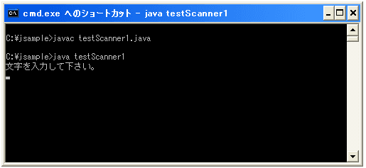
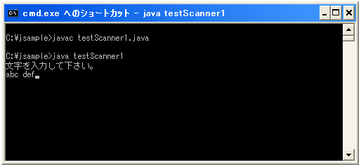
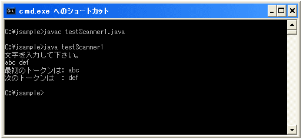
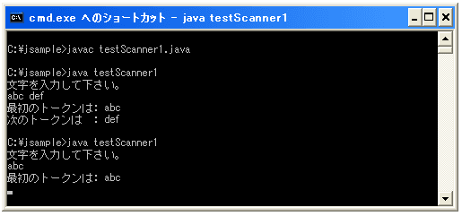
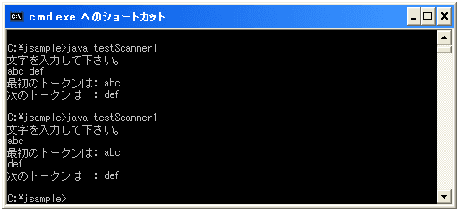
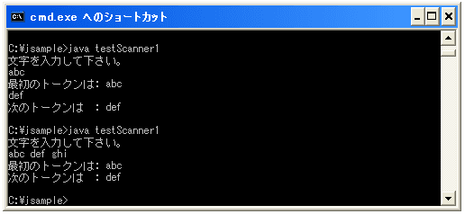

- Home ›
- Java入門 ›
- Scannerクラス
キーボードから入力
まずキーボードから入力された文字を読み取る方法について見ておきます。使用するコンストラクタは下記となります。
Scanner public Scanner(InputStream source)
指定された入力ストリームからスキャンされた値を生成する Scanner を新しく作成します。ストリ ームから取得したバイトは、基になるプラットフォームのデフォルト文字セットを使用して文字に変 換されます。 パラメータ: source - スキャン対象の入力ストリーム
キーボードからの入力を受けつける場合はSystem.inを使って下記のように記述します。
Scanner scan = new Scanner(System.in);
コンストラクタの引数で指定したところから値を読み込もうとします。ファイル名を指定した場合はファイルから、文字列などを指定した場合はその文字列を読み込みます。今回のように標準入力を指定した場合にはキーボードから読み込む対象のテキストを入力します。
読み込みを実際に行うと読み込み対象から値を読み込もうとします。標準入力からの場合はリターンキーを押すと入力が完了したと見なされ、入力されたテキストから値を読み込みます。一度に読み込む値は区切り文字までです。区切り文字のデフォルトは空白文字です。例えば下記のようにキーボードから入力を行った場合で考えてみます。
abc def
この場合、読み込みを行うと「abc」という値を読み込みます。この状態で次に読み込みを行うと、先ほどの残りのテキストである「def」がまだ残っているため、この値を読み込みます。さらに読み込みを行うと、読み込み対象のテキストが残っていないため、再度キーボードからの入力待ちとなります。
ではまず文字を入力してもらい読み込んでみます。文字を読み込むには「next」メソッドを使います。
next public String next()
このスキャナから次の完全なトークンを検索して返します。完全なトークンの前後には、区切り文字 パターンに一致する入力が配置されます。このメソッドは、前の hasNext() の呼び出しで true が 返された場合でも、入力のスキャンの待機中にブロックを実行する可能性があります。 戻り値: 次のトークン 例外: NoSuchElementException - 利用可能なトークンがこれ以上存在しない場合 IllegalStateException - このスキャナがクローズしている場合
nextメソッドを実行すると、区切り文字までの文字を読み込みます。まだ対象としているテキストが残っていた場合には、次にnextメソッドを実行すると読み込む事ができます。
サンプルプログラム
では実際に試してみましょう。下記では「abc def」など区切り文字で区切られた2つの文字を読み込む事を前提としています。
import java.util.Scanner;
class testScanner1{
public static void main(String args[]){
System.out.println("文字を入力して下さい。");
Scanner scan = new Scanner(System.in);
String str = scan.next();
System.out.println("最初のトークンは: "+ str);
str = scan.next();
System.out.println("次のトークンは : "+ str);
}
}
上記を実際にコンパイルして実行してみると下記のようになります。

上記のようにキーボードからの入力待ちとなります。ここで「abc def」と入力して下さい。

上記の状態からリターンキーを押すと読み込み対象のテキストの入力を終了し解析を開始します。

入力されたテキストをデフォルトの区切り文字である空白で分割し、それぞれのトークンを読み込んで出力しています。
では単に「abc」とだけ入力した場合も見てみます。

最初のトークンの読み込みは終わっていますが、次のトークンが無い為、改めてキーボードから入力待ちとなります。そこで改めて「def」と入力してみて下さい。

最後に「abc def ghi」と3つのトークンに区分されるように入力してみます。

この場合は1番目と2番目のトークンを読み込みで終了します。残っている「ghi」は捨てられます。
( Written by Tatsuo Ikura )

著者 / TATSUO IKURA
初心者～中級者の方を対象としたプログラミング方法や開発環境の構築の解説を行うサイトの運営を行っています。